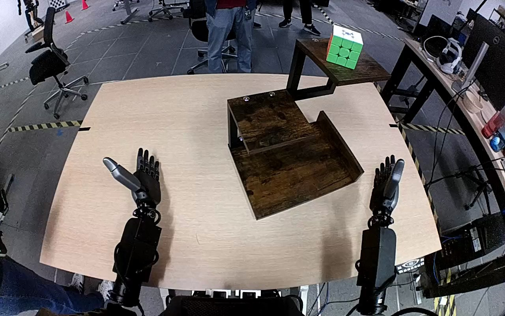

NVIDIA GR1 · 76
Video 76

Visual review action_review.json
{
"prompt_protocol": "humanoid_action_v1",
"prompt_provenance": "visually_authored_from_video_and_initial_frame",
"reviewed_contact_sheets": [
"sheet_001.jpg"
],
"inspected_frame_stride": 2,
"inspected_sampled_frame_count": 60,
"initial_scene": "The robot is viewed looking forward and downward over its visible central body and two arms. A Rubik's cube with green front and white top stands on the highest level of a wooden stepped shelf. Both hands start open; the bottom shelf is empty.",
"observed_sequence": [
{
"source_frame_interval": [
0,
18
],
"action": "Both hands remain open near the robot while the cube rests upright on the upper shelf.",
"confidence": "high"
},
{
"source_frame_interval": [
19,
48
],
"action": "The right arm raises its open hand to the upper shelf and positions the thumb and fingers on opposite sides of the cube. The left hand remains stationary and open.",
"confidence": "high"
},
{
"source_frame_interval": [
49,
68
],
"action": "The right fingers close around the cube; the cube remains over the upper level while the grasp is secured and begins lifting clear.",
"confidence": "high"
},
{
"source_frame_interval": [
69,
94
],
"action": "The right hand lifts the cube off the upper shelf, carries it outward and downward, then moves it inward above the bottom shelf.",
"confidence": "high"
},
{
"source_frame_interval": [
95,
109
],
"action": "The right hand lowers the cube upright onto the lower wooden shelf and settles it while maintaining its grasp.",
"confidence": "high"
},
{
"source_frame_interval": [
110,
119
],
"action": "The right fingers and thumb open away from the cube. The cube stands unsupported by the hand on the lower shelf; the right hand remains open adjacent to it.",
"confidence": "high"
}
],
"arm_hand_roles": {
"right": "Sole manipulator: reaches to upper shelf, closes fingers and thumb around cube, lifts, transports downward, lowers onto bottom shelf, and opens to release.",
"left": "Remains open beside the left side of the robot; no object contact, stabilization, transfer, or coordinated support."
},
"anatomical_side_evidence": {
"evidence": "The initial view looks forward over the robot's central body visible at the bottom edge. The active arm emerges from the body's right side and extends forward along the right side of this same-direction view; its counterpart emerges at the left side. Forearms remain continuously traceable to these body-side positions during manipulation. The right-hand thumb is inward toward the body center as the hand reaches and grasps.",
"confidence": "high",
"uncertainty": "The head and full shoulder outline are outside the view, but visible central body, arm origins, and hand geometry establish the side convention."
},
"coordination": "Single right-hand manipulation; no hand-to-hand transfer, second-hand support, or person interaction.",
"terminal_state": "The Rubik's cube stands upright on the bottom wooden shelf with its white face upward and green face forward. The right hand is open adjacent to it with the fingers and thumb clear of the cube; the left hand remains open and idle. The upper shelf is empty.",
"uncertainties": [
"The precise instant of first cube-to-bottom-shelf contact is partially occluded by the right hand; placement and release are evident by the final native frames."
],
"annotation_discrepancies": [],
"evidence_frame_indices": [
0,
30,
42,
64,
72,
90,
104,
110,
114,
118,
119
],
"selected_execution_status": "success",
"inspection_coverage": {
"complete_source_range": [
0,
119
],
"contact_sheet_samples": "All 60 every-second frames from frame 0 through 118 visually inspected.",
"native_initial_png_inspected": true,
"native_transition_and_terminal_frames": [
30,
42,
64,
72,
90,
104,
110,
114,
118,
119
]
},
"video_id": "76",
"dataset": "NVIDIA_GR1_100",
"dedicated_review_agent": "review_gr1_76",
"review_source_video": "NVIDIA_GR1_100/76/original/original.mp4",
"source_frame_count": 120,
"source_fps": 20.0,
"native_detail_frames": [
30,
42,
64,
72,
90,
104,
110,
114,
118,
119
],
"world_model_prompt": "The robot closes its right hand around the Rubik's cube on the upper level of the wooden shelf and lifts it clear. It carries the cube down to the bottom level, sets it upright, and opens its right hand to release it, leaving the cube resting on the lower shelf. Keep the camera fixed; preserve robot geometry, physically valid joint motion, and normal gripper opening and closing.",
"original_task_instruction": "Use the right hand to pick up rubik's cube from top level of brown wooden shelf to bottom level of brown wooden shelf.",
"selected_segment": {
"start_frame": 0,
"end_frame_exclusive": 120,
"reason": "Complete original single-task reference; no cropping or trimming requested."
},
"source_video_sha256": "fa8e5c158dea35e062eb1a7d913bc47455d04292c9de1eca428618bc1c8bd038",
"review_completed_at": "2026-10-13T18:32:12.497218+00:00"
}